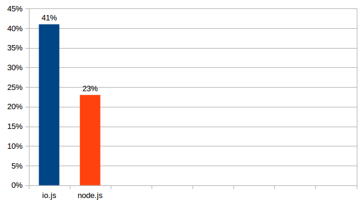
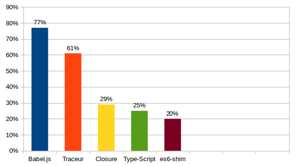

ECMAScript 6
czyli JavaScript na sterydach
by lkokoszka@future-processing.com aka "Max"
Historia
- Mocha/LiveScript Netscape CC (~1995)
- ECMAScript 1-3.1 czyli rdzeń dzisiejszego języka (standard ECMA-262) (1997-1999)
- ECMAScript 4 nigdy nie został opublikowany
- ECMAScript 5 (12.2009)
- ECMAScript 5.1 (06.2011)
- ECMAScript 6 (06.2015? "feature frozen" od 08.2014)
- ECMAScript 7 !?
Cele
- dodanie nowych typów danych
- usprawnienie pracy z już dostępnymi typami danych
- wprowadzenie nowych możliwości do języka
- optymalizacje, rozwiązanie problemów-ciągutek
Lepsza obsługa Unicode
zmiany w rdzeniu języka
- wymuszenie UTF-16 jako domyślnego i jedynego kodowania znaków
- uzyskanie wsparcia dla wszystkiego poza zakresem Basic Multilingual Plane (BMP) (tj. powyżej 2^16)
- wyeliminowanie problemów znanych z ECMAScript 5 związanych z ograniczenami 16-bitowych "code units"
ECMAScript 5
var text = "𠮷"; // CJK UNIFIED IDEOGRAPH
console.log(text.length); // 2 (surrogate pair)
console.log(/^.$/.test(text)); // singe character test; false
console.log(text.charAt(0)); // ""
console.log(text.charAt(1)); // ""
console.log(text.charCodeAt(0)); // 55362
console.log(text.charCodeAt(1)); // 57271
ECMAScript 6
var text = "𠮷a";
console.log(text.charCodeAt(0)); // 55362
console.log(text.charCodeAt(1)); // 57271
console.log(text.charCodeAt(2)); // 97
console.log(text.codePointAt(0)); // 134071
console.log(text.codePointAt(1)); // 57271
console.log(text.codePointAt(2)); // 97
codePointAt() && String.fromCodePoint()
- ''.codePointAt(code_unit_position)
aby wyciągnąć "code point" (id znaku) w trybie "Non-BMP safe" - String.fromCodePoint(int)
aby wyciągnąć znak po jego "code point" w trybie "Non-BMP safe"
escape'owanie znaków Non-BMP
console.log("\u0061"); // "a" - aktualny standard
console.log("\u20BB7"); // "₻7" - próba użycia znaku Non-BMP
console.log("\u{20BB7}"); // " " - ECMAScript 6
normalizacja znaków
- normalize(metoda_normalizacji)
nowa metoda dostępna na string'ach służąca do normalizacji przez transliterację
dostępne są 4 metody normalizacji: NFC, NFD, NFKC, NFKD
nowa flaga dla regexp'ów
/u - wymusza prace silnika wyrażeń regularnych w oparciu o znaki, nie "code units"
String'i
nowe metody
- ''.includes(tekst, location) - sprawdza czy dany tekst występuję w łańcuchu znaków
- ''.startsWith(tekst, location) - sprawdza czy na początku łańcucha znaków występuje podany tekst
- ''.endsWith(tekst, location) - sprawdza czy na końcu łańcucha znaków występuje podany tekst
* wszystkie przyjmują parametr location, czyli punkt początkowy i zwracają wartość bool'owską
- ''.repeat(n_razy) - powtórzy dany string n razy
iteratory dla string'ów
- wraz z wprowadzenie iteratorów i generatów ich obsługa zostaje udostępniona dla string'ów
- iteracja odbywa się po znakach nie po "code units"
- ale!!! bracket-notation nadal porusza się po "code units"
string templates
jak miałobyć?
- dodają "syntax sugar" pozwalający na budowanie DSL dla uproszczenia pracy z zawartością
- mają być odporne na różne wektory ataków (np. XSS, SQL Injection itd)
jak jest?
- rozwiązują problem wielolinijkowych string'ów
- pozwalają na proste formatowanie przez substytucje na podstawie parametrów
podstawy
let oneLiner = `it is a one line`; // znak delimitacji `
let multiLiner_maybe_bad = `Multi // zachowuje się jak <pre>
line text`;
let multiLiner_maybe_good = ` // prosty trick
Multi
line text
`.trim();
interpolacja
let what = 'dog',
with = 'a long tail',
// używamy zmiennych "osiągalnych" w scope'ie
msg1 = `it is a ${what}`,
msg2 = `it is a ${what} with ${with}`;
console.log(msg1); // "it is a dog"
console.log(msg2); // "it is a dog with a long tail"
interpolacja i wyrażenia (expressions)
let howMuch = 20,
exchangeRate = 4,
convert = function (eur, exRate) {
return (eur * exRate).toFixed(2);
},
euro2pln = `it is ${(howMuch * exchangeRate).toFixed(2)} PLN`;
euro2plnFn = `it is ${convert(howMuch,exchangeRate)} PLN`;
console.log(euro2pln); // "it is 80.00 PLN"
console.log(euro2plnFn); // "it is 80.00 PLN"
transformacje na szablonach czyli tzw. "tagged templates"
tag`Hello ${name}`
transformacje na szablonach czyli tzw. "tagged templates" c.d.
- wymagają zdefiniowania funkcji transformującej, która akceptuje następujące argumenty:
- tablicę utworzoną na podstawie pocięcią szablonu po interpolacjach tzw. "literals"
- n-argumentów które będą wynikami wykonania kolejnych interpolacji
dlatego też zaleca się stosowanie notacji dwu-argumentowej -> ...rest args
wtedy to powstaje prosta zależność: arguments[0].length + 1 = arguments[1].length;
transformacje na szablonach czyli tzw. "tagged templates" c.d.
function extRangeTrans(literals, ...substitutions) {
let result = "", i;
for (i = 0; i < substitutions.length; i++) {
result += literals[i];
result += substitutions[i];
}
result += literals[literals.length - 1];
return result;
}
let pln = 20,
exRate = 4.2,
euro2pln = extRangeTrans`
${eur} EUR (@ ${exRate}) is
${(eur * exRate).toFixed(2)} PLN
`.trim();
console.log(euro2pln); //20 EUR (@ ${exRate}) is 84.00 PLN
pozostałe możliwości
- String.raw to jedyny wbudowany tag pozwalający powstrzymać escepowanie znaków specjalnych
- dodatkowo "literals" w funkcji transformującej udostępnia właściwość .raw dla każdego elementu tablicy który zawiera literał przed escepowaniem
`a\nb`
// a
// b
String.raw`a\nb`
//a\nb
regular expressions
co nowego poza flagą `u`? może: `y`
- y - znana już z FireFox'a flaga sprawiająca, że wyszukiwanie zawsze odbywa się w odniesieniu
do właściwości `lastIndex` wyrażenia regularnego, tj. ostatniego zapamiętanego położenia w
łańcuchu znaków.
Domyślnie 0. (implikuje użycie ^ podczas wyszukiwania) - stan flagi można sprawdzić poprzez odpytanie właściwości `.sticky` instancji wyrażenia regularnego
`yyyy`, a może przykładzik
var text = 'First line\nsecond line';
var regex = /(\S+) line\n?/y;
var match = regex.exec(text);
match[1] // 'First'
regex.lastIndex // '11'
var match2 = regex.exec(text);
match2[1] // 'Second'
regex.lastIndex // '22'
var match3 = regex.exec(text);
match3 === null // 'true'
inne nowości
- ECMAScript 6 umożliwia duplikację wyrażenie reg. przez użycie konstruktora RegExp z dodatkową opcją nadpisania flag.
w ECMAScript 5 taka próba skutkowała błędem - właściwość `.flags` na wyrażeniu regularnym zwraca użyte flagi (jako string)
var re1 = /ab/i,
re2 = new RegExp(re1, "g");
number's i math
obsługa wartości oktalnych i binarnych
- liczby w system oktalnym: 0o
- liczby w system binarnym: 0b
- konstruktor Number będzie wspierał obsługę nowej notacji liczb
- ale parseInt nie będzie wspierał ich ekstrakcji ze string'ów
var value1 = 0o71; // 57
var value2 = 0b101; // 5
parseInt("0o71"); // 0
parseInt("0b101"); // 0
Number("0o71"); // 57
Number("0b101"); // 5
standaryzajca dostępu do metod / lepszy namespacing
- `isFinite` oraz `isNan` będą dostępne również jako statyczne metody Number
.isFinite i .isNan.
Różnica będzie polegać na tym, że argument nie będzie przekazywany przez konstruktor Number, co oznacza, że jeśli nie zostanie przekazany argument typu Number, silnik rzuci błędem. - `parseInt` oraz `parseFloat` również będą dostępne jako statyczne metody Number
.parseInt i .parseFloat.
tutaj nie zachodzi żadana zmiana w ich działaniu, poza umieszczeniem w namespacie Number.
isFinite(25) // true
isFinite("25") // true
Number.isFinite(25) // true
Number.isFinite("25") // false
isNaN(NaN) // true
isNaN("NaN") // true
Number.isNaN(NaN) // true
Number.isNaN("NaN") // false
nowe możliwości
- Number.isInteger aby sprawdzić czy zadana liczba jest integer'em.
- Number.isSafeInteger aby sprawdzić czy podana liczba jest int'em w "bezpiecznym zakresie" tj. <-2^53; 2^53>
- Dwie właściwości statyczne Number określające "bezpieczny zakres" dla int'ów: .MIN_SAFE_INTEGER i .MAX_SAFE_INTEGER
Number.isInteger(25) // true
Number.isInteger(25.0) // true
Number.isInteger(25.1) // false
Number.isSafeInteger(9007199254740991) // true
Number.isSafeInteger(9007199254740992) // false
17 nowych metod Math
- cały zbiór nowych metod matematycznych:
acosh, asinh, atanh, cbrt,
cl232, cosh, expm1, fround,
hypot, imul, log1p, log10,
log2, sign, sinh, tanh, trunc
zasięg blokowy
czyli wyrażenia `let` i `const`
zasięg blokowy i wyrażenie `let`
let color = 'red';
if (true) {
console.log(color) // ReferenceError
let color = 'white';
console.log(color) // "white"
}
console.log(color) // "red"
zasięg blokowy i wyrażenie `let`*
- wyrażenie let daje nam możliwość tworzenia zmiennych lokalnych dostępnych tylko w scopie danego bloku kodu (tj. kodu opakowanego w {...})
- zmienne nie są hoistowane do najbliższego bloku funkcyjnego
- ...ale też nie są hoistowane w zakresie bloku w którym został zadeklarowane
powstaje tzw. TDZ: temporal dead zone tj. użycie zmiennej przed jej deklaracją zwróci ReferenceError
zasięg blokowy i wyrażenie `let` c.d.
- użycie let w zagnieżdżonym bloku powoduje shadowing zmiennej z bloku nadrzędnego
- zabrania się użycia let w scopie globalnym z nazwą właściwości obiektu globalnego, która jest niekonfigurowalna!
- redeklaracja zmiennej z użyciem let lub var w jednym bloku powinno skutować błędem składni.**
pętle i zmienne deklarowane via `let`
najbardziej zauważalna różnica dotyczy użycie `let` i pętli `for`, gdzie każde wykonanie pętli powoduje inicjalizację nowej zmiennejużycie var
var funcs = [];
for (var i = 0; i < 10; i++) {
funcs.push( function () { console.log(i); });
}
funcs.forEach(function (func) {
func(); // wypluje liczbę "10" 10x
});
verte ↓
pętle i zmienne deklarowane via `let` c.d.
użycie let
var funcs = [];
for (let i = 0; i < 10; i++) {
funcs.push( function () { console.log(i); });
}
funcs.forEach(function (func) {
func(); // wypluje liczbę "0", potem "1" itd.
});
stałe, czyli wyrażenie `const`
- ECMAScript 6 wprowadza możliwość użycia stałych dzięki ich deklaracji z użyciem wyrażenia const
- stałe zachowują się jak zmienne zadeklarowane z użyciem `let` tj. są przypisane do bloku w którym zostały zdeklarowane
const MAX_SIZE = 'red';
destrukturyzacja
destrukturyzacja obiektów
czyli szybkie wydobywanie właściwości do zmiennych lokalnych
var sourceObject = {from: 1, to: 2}
function ECMAScript5 (sourceObject) {
var localFrom = sourceObject.from,
localTo = sourceObject.to;
}
function ECMAScript6 (sourceObject) {
let { from: localFrom, to: localTo } = sourceObject;
console.log(localFrom, localTo); // :)
// lub w przypadku mapowania nazwenictwa 1:1
let { from, to } = sourceObject;
console.log(from, to); // :D
}
{ wlasciwoscObiektuZrodlowego: zmienneLokalna} = obiektZrodlowy
destrukturyzacja obiektów c.d.
obsługa zagnieżdżonych obiektów
var sourceObject = { from: 1, to: 2, more: { max: 3 } };
// później gdzieś w kodziwie...
let { from, to, more: { max }} = sourceObject;
console.log(from, to, max);
// :D - ! `more` nie zostanie zadeklarowane
destrukturyzacja tablic
var kolory = ['red', 'green', 'blue'];
// później gdzieś w kodziwie...
let [firstColor, secondColor] = kolory;
console.log(firstColor, secondColor) // :D
[ pierwszyElement, drugiElement...] = tablicaZrodlowa
destrukturyzacja mieszana
var sourceObject = { from: 1, to: 2, colors: [
'red', 'green', 'blue'
]};
// później gdzieś w kodziwie...
let {from, to, colors: [firstColor, secondColor]} = kolory;
console.log(from, to, firstColor, secondColor) // :D
let {from, to, colors} = kolory;
console.log(from, to, colors)
// :D - colors będzie referencją do sourceObject.colors
funkcje
wartości domyślne parametrów funkcji
function reload (what, in = 2000, then = function () {} ) { }
function defaultAddWhatValue () { return 0; }
function add (addTo, addWhat = defaultAddWhatValue() + 0) { }
- użycie domyślnych parametrów, nie wymaga definiowania parematerów w jakiejkolwiek określonej kolejności
aby pominąć parametr domyślny podczas wywołania należy przekazać undefined - można odwoływać się do wyrażeń (w tym innych funkcji) w celu pozyskania domyślnej wartości
"rest params", czyli "cała reszta"
function sampleRest (param1, param2, ...options) {
...
console.log(options.length);
// ^ == przekazane - zadeklarowane nazwane
}
- to "wrzucanie" wszystkich nienazwanych parametrów do jednego "nazwanego"
- rest params definiuje się jako ostatni parametr funkcji (po innych nazwanych), przy użyciu specjalnej notacji: ...localName
parametry destrukturyzowane
function destParams (param1, {setting1, setting2}, {setting3} = {}) {
console.log(param1, setting1, setting2, setting3);
}
destParams(1); // error!
destParams(1, {setting1: 'a', setting2: 'b'});
- można dokonać destrukturyzacji obiektu oczekiwanego jako parametr na poziomie definiowania parametrów funkcji
"spread operator", czyli "Szkrótem Asterixie! Szkrótem!"
var params = ['a', 'b'];
function yYoOeE (param1, param2) { }
// zamiast
yYoOeE.apply(yYoOeE, params);
// szkrótem!
yYoOeE(...params);
- nowy operator ... wykorzystywany podczas wywoływania funkcji. Pozwala łatwo przekształcić tablicę/string (każdy iterable) na kolejne parametry funkcji... "rozwinać wskazany iterable"
lepsza obsługa nazw funkcji
- nowa właściwość statyczna funkcji: .name zawiera jej nazwę, bez względu na metodę jej deklaracji
- w przypadku funkcji bedących nazwanymi function-expressions użyta nazwa ma wyższy priorytet
- w przypadku funkcji będących anonimowymi function-expressions użyta zostanie nazwa zmiennej lub właściwości obiektu do której dana funkcja ma zostać przypisana
- akcesory (getter'y i setter'y) zawierają dodatkowy prefix odpowiadający typowi akcesora tj. "get" lub "set";
lepsza obsługa nazw funkcji c.d.
- nowa właściwość statyczna funkcji: .name c.d.
- tzw. "bounded functions" czyli pochodzące z użycia `.bind` mają prefix "bound"
- funkcje anonimowe uzyskują nazwę "anonymous"
lepsza obsługa nazw funkcji c.d.
var doSomething = function doSomethingElse() { };
// doSomething.name == "doSomethingElse"
function doSomething () { }
// doSomething.name == "doSomething"
var doAnotherThing = function () { };
// doAnotherThing.name == "doAnotherThing"
var person = { get firstName () { }, sayName: function () { }};
// person.firstName.name == "get firstName"
// person.sayName.name == "sayName"
var test = doSomething.bind(null);
// test.name == "bound doSomething"
// (function () {}).name == "anonymous"
funkcje blokowe, tzw. "block level declared functions"
- ECMAScript 6 wprowadza możliwość deklarowania funkcji w dla dowolonych bloków kodu (czyli zachowujących się jak zmienne lokalne
zadeklarowane z użyciem `let`)
ale uwaga! funkcje deklarowane w przeciwieństwie do function expressions definiowanych z użyciem `let` są hoistowane w zakresie danego bloku gdy używany jest "strict mode", poza nim są hoistowane do najbliższego bloku funkcyjnego
funkcje blokowe, tzw. "block level declared functions" c.d.
"use strict";
if ( true ) {
console.log( typeof doSomething); // "function"
function doSomething() { }
}
console.log( typeof doSomething);
// "undefined"
"arrow functions", czyli uproszczone definiowanie funkcji
- "arrow functions" to anonimowe funkcje definowane za pomocą nowej notacji z użyciem =>, (tzw. "strzałki" - stąd nazwa)
var justReturn = value => value;
// jest równoznaczne z:
var justReturn = function (value) { return value; };
[0,1,2].forEach(v => {
results.push(v * 2);
});
"arrow functions" c.d.
- "arrow functions" mogą przyjmować od 0* do n** parametrów. Ale! każda forma inna niż 1-parametrowa wymaga opakowania argumentów w nawiasy okrągłe *() lub **(...)
- bardziej złożone funkcje należy opakować curly braces
{...}
var test = () => 'test';
var add = (param1, param2) => { return param1 + param2 };
prawdy prawdziwe ;) n.t "arrow functions"
- this jest chronione i statycznie zbindowane do miejsca definicji (tzw. implicit binding / static bound)
- nie można ich używać jako konstruktorów, tj. z operatorem new (literatura określa je jako "notNEWable")
- w przypadku wersji zero- lub jedno- parametrowej nie trzeba stosować return
aby zwrócić obiekt należy go opakować w nawiasy okrągłe ({}) - "arrow functions" mogą być "nazwane"*
var addFn = add() => { return add() };
* wciąż dyskutowane
inne prawdy prawdziwe ;) n.t "arrow functions"
- nie posiadają własnego `arguments`
(arguments wskazuje na najbliższy dostępny) - "arrow functions" można z powodzeniem używać jako IIFEs wystarczy je opakować w nawiasy okrągłe
- "arrow functions" nie mają prototypu dostępnego przez `.prototype`
obiekty
uproszczone literały obiektów
- "shorthand properties" czyli zamiana
zmiennych lokalnych na właściwiości obiektu o tej samej nazwie (odwrotność destrukturyzacji)
brak wartości dla zadanej właściwiości wymusi na silniku JS przeszukanie otaczającego scope'a w poszukiwaniu zmiennej o tej samej nazwe
let local = 1,
example = { local };
// example == { local: 1 };
uproszczone literały obiektów c.d.
- "shorthand methods" czyli uproszczony zapis metod podczas ich definiowania
let example = {
do() {
//...
}
}
// typeof example.local == 'function'
"computed properties names"
- dzięki zastosowaniu bracket notation (tj. []) można definiować nazwy właściwiości "wyliczane" dynamiczne w chwili definiowania obiektu
let errorSuffix = 'Error',
errorSuffixProvider = () => 'Error',
example = {
['profile' + 'Error']: false,
['user' + errorSuffix]: false,
['network' + errorSuffixProvider()]: false
};
// example = {
// profileError: false, userError: false, networkError: false
// }
nowe metody statyczne Object
- Object.is sprawdzają czy dwie podane wartości są identyczne przy zastosowaniu operatora ścisłego porównania === z wsparcie dla szczególnych przypadków takich jak +0, -0, NaN
- Object.assign wprowadza wsparcie dla mixowania/ mergowania obiektów. Kopiuje wszystkie
"enumerable" properties z dowolnej ilości źródełowych obiektów do obiektu celu
nie kopiuje akcesorów, a zwróconą przez getter (jeśli zdefinowany) wartość
nowe metody statyczne Object c.d.
-
Object.setPrototypeOf zmienia prototype-chain instancji obiektu.
Jest przeciwieństwem Object.getPrototypeOf z ECMAScript 5.
To oznacza, że dochodzi do zamiany wewnętrznej właściwości "[[Prototype]]" danego obiektu.
Wprowadzenie tej metoda ma na celu formalizację i standaryzację pracy z użyciem właściwości __proto__ pomiędzy różnymi silnikami JS.
wew. __proto__ ma pracować z użyciem nowych metod. Setter __proto__ będzie wywoływał setPrototypeOf
nowe metody statyczne Object c.d.
let person = {
getGreeting() { return "Hello"; }
};
let dog = {
getGreeting() { return "Woof"; }
};
let friend = Object.create(person);
friend.getGreeting() // "Hello"
Object.getPrototypeOf(friend) === person // true
Object.setPrototypeOf(friend, dog);
friend.getGreeting() // "Woof"
Object.getPrototypeOf(friend) === dog // true
"super referencja", czyli odwołanie się do prototypu
- ECMAScript 6 wprowadza tzw. super referencję czyli dostęp do obiektu-prototypu z poziomu jego metod. Dodatkowo może być użyta jako funkcja, wtedy wywoła metodę o tej samej nazwie w prototypie.
// metoda getEmployer na instancji Developer
// którego prototypem jest Employee
getEmployer() {
Developer.prototype.getEmployer.call(this);
// lub
this.__proto__.getEmployer.call(this)
// lub
Object.getPrototypeOf( this ).getEmployer.call( this );
// lub w ECMAScript 6
super.getEmployer(); // === super.getEmployer.call(this)
// lub
super()
}
super referencja, a definicja "metody"
super referencja wprowadza konieczność zdefiniowana nowej ukrytej/wew. właściwiość funkcji/metody oznaczonej w dokumentacji jako [[HomeObject]]. Ta wskazuje na obiekt do którego dana funkcja/metoda należy i jest ustawiana w chwili definiowania funkcji.
super referencja, a definicja "metody"
To zmienia definicję metody w JS.
"ECMAScript 6 formally defines a method as a function that has an internal [[HomeObject]] property containing the object to which the method belongs.""zatem w każdym inny przypadku mamy doczynienia z funkcją!
super referencja i przeciążanie metod @runtime
ponieważ [[HomeObject]] jest stricte związany z procesem definiowana funkcji, aby móc korzystać z dobordziejstw super referencji w przypadku nadpisywania metod obiektu w czasie jego życia, należy użyć nowej metody dostępnej dla każdej funkcji .toMethod(), która skonwertuje funkcję na metodę.
toMethod w praktyce
let friend = {
sayHi() {
return "hi!";
}
};
function sayHiAndYo () {
return super.sayHi() + ", yo!";
}
friend.sayHi = sayHiAndYo;
friend.sayHi(); // error!
friend.sayHi = sayHiAndYo.toMethod(friend); // :)
super vs. this
- super zależy od miejsca definicji metody
- this jest przetwarzany przez silnik JS @runtime - ewaluuje
- przekazywanie funkcji/metody przez referencję zmienia this ale nie wpływa na super
symbole
WTF?
- symbol to nowy, unikalny i niezmienny!!! primitywny typ danych,
który może zostać z powodzeniem wykorzystany jako identyfikator dla właściwości obiektu
Symboli można używać wszędzie tam gdzie można używać "computed property name" dzięki bracket-notation lub jako parametru dla Object.defineProperty - aby utworzyć symbol w zależności od jego przeznaczenia (użycie lokalne vs. użycie globalne) należy posłużyć się obiektem wrapper'em Symbol lub jego metodą Symbol.for (która zrejestruje go w globalny rejestrze)
tworzenie symbolu w praktyce
var sym1 = Symbol(),
sym2 = Symbol("foo"),
sym3 = Symbol("foo"),
sym4 = new Symbol(), // TypeError
sym5 = Symbol.for('meta_data_storage');
// pierwszy lookup utworzy nowy symbol o danym opisie/kluczu
// typeof sym1 == "symbol"
// typeof sym3 == "symbol"
// typeof sym5 == "symbol"
- symbol może zawierać opis/klucz (przechowywany wew.), który:w przypadku symboli globalnych może posłużyć do jego odszukania w rejestrze,
w przypadku lokalnych może przydać się w procesie debuggowania
- ponieważ Symbol nie jest konstruktorem nie można używać go z operatorem `new`
globalny rejestr symboli
var sym = Symbol.for('meta_data_storage');
// pierwszy lookup utworzy nowy symbol o danym opisie/kluczu
console.log(Symbol.keyFor(sym)); // "meta_data_storage"
w przypadku użycia keyFor z symbolem lokalnym metoda zwróci undefined
rzutowanie symboli
- na string jest możliwe tylko jawnie z użyciem konstruktora String(...)
To znaczy, że niejawne rzutowanie np. ''+sym zakończy się błędem - na number jest niemożliwe i zwróci błąd
- na boolean zawsze true
"well-known symbols"
to lista symboli wykorzystywanych w silniku JS i opisanych w specyfikacji jako dostępnych dla programisty w celu umożliwenia zmian w część wewnętrznych zachowań języka. Spec. posługuje się notacją "@@nazwaSymbolu" dla odróżnienia symboli od innych danych
"well-known symbols" przykłady
-
@@toStringTag dostępny via Symbol.toStringTag
to wew. właściwość obiektów używana przez Object.prototype.toString
do zbudowania "opisu" obiektu: "[object Object]" podczas wywołania tej metody.
Dostęp do tego symbolu umożliwia nadpisanie output metody do stanu: "[object Custom]"* - @@toPrimitive dostępny via Symbol.toPrimitive to wew. metoda obiektów używana do rzutowania na podstawie przekazane parametry hint, można ją nadpisać i zaimplementować własną metodą rzutowania
"well-known symbols" przykład
function Person(name) {
this.name = name;
}
Person.prototype[Symbol.toStringTag] = "Person";
Person.prototype.toString = function () {
return this .name;
};
var me = new Person("Nicholas");
console.log(me.toString()); // "Nicholas"
console.log(Object.prototype.toString.call(me)); // "[object Person]
właściwości obiektów zdefiniowane z użyciem symboli
ponieważ Object.getOwnPropertyNames nie zwróci właściwości zdefniowanych za pomocą symboli, aby uzyskać do nich dostęp należy użyć Object.getOwnPropertySymbols, który zwróci array symboli
iteratory i generatory
iteratory
- iterator w ECMAScript 6 to wzorzec programistyczny, którego wykorzystanie jest dodatkowo wspierane przez silniki JS
- iterator to obiekt implementujący metodę .next(), która za każdy wywołaniem zwraca obiekt eksponujacy 2 właściwości: done i value
- dodatkowo oczekuję się aby po "przekroczeniu zakresu" iterator zwrócił dla done wartość true, a dla value wartość undefined*
przykładowy iterator
function createIterator(items) {
var i = 0;
return {
next: function () {
var done = (i >= items.length),
value = !done ? items[i++] : undefined;
return { done: done, value: value };
}
};
}
var iterator = createIterator([1, 2, 3]);
console.log(iterator.next()); // "{ value: 1, done: false }"
console.log(iterator.next()); // "{ value: 2, done: false }"
console.log(iterator.next()); // "{ value: 3, done: false }"
console.log(iterator.next()); // "{ value: undefined, done: true }
definicja takiego iteratora jest możliwa już w ECMAScript 5, jedynie
ostatni przypadek jest szczególny i związany z oczekiwaniami ECMAScript 6
generatory
- generatory to całkowita nowość wprowadzająca do języka szereg możliwości
- generator tworzy się / oznacza poprzez zastosowanie znaku * przed nazwą funkcji, a po słowie kluczowym function*
- wartości zwracane przez generator automatycznie implementują wzorzec iteratora
- generator wykorzystują nowe wyrażenie yield**, po którym dalsze wykonanie generatora jest pauzowane
**- yield działa zbliżenie do return zwraca dowolną wartość albo wynik wykonania wyrażenia
przykładowy generator
// generator
function *createIterator() {
yield 1;
yield 2;
yield 3;
}
generatory c.d.
- generatory mogą być definiowane jako metody literałów
- generatory mogą również by definiowane jako metody klas
var obj = {
es5: function * () {},
*es6() {}
};
class A {
*giveMe () {}
}
"iterables" czyli "symbolem go!, symbolem"
- iterables czyli obiekty "iterowalne", tj. posiadające metodę "iteratora" której kluczem jest symbol @@iterator dostępny via Symbol.iterator. Jej wywołanie musi zwracać iterator zgodny z wzorcem - metoda może zatem być generatorem
- Array, Set, Map, String, DOMNodeList to przykładowe "iterables"
jak iterować?
// generator
function *createIterator() {
yield 1;
yield 2;
yield 3;
}
let iterator = createIterator();
for ( let i of iterator ) {
console.log(i);
}
return w generatorze
- generatory to w gruncie rzeczy funkcje, więc można w nich używać return, które to która zakończyć "iterację"*
- zakończenie interacji zmiania flagę done na true i zwraca via value wartość return.
- Dalsze próby iteracji zwrócą value = undefined
// generator
function *createIterator() {
yield 1;
return 100;
yield 2;
yield 3;
}
to jednak zadziała tylko przy manualnej iteracji - for..of ignoruje zwróconą wartość
delegacja w generatorach
- generatory mogą delegować wykonanie do innych generatorów poprzez zastowanie * pomiędzy yield a wyrażenie po jego prawej stronie
function *createNumberIterator() {
yield 1;
yield 2;
}
function *createCombinedIterator() {
yield *createNumberIterator();
yield true ;
}
var iterator = createCombinedIterator();
console.log(iterator.next()); // "{ value: 1, done: false }"
console.log(iterator.next()); // "{ value: 2, done: false }"
console.log(iterator.next()); // "{ value: true, done: false }"
console.log(iterator.next()); // "{ value: undefined, done: true }"
delegacja w generatorach, a domyślne iteratory
- generatory mogą delegować wykonanie także do domyślnych iteratorów poprzez poprzedzenie zwracanych przez yield danych znakiem *
function *createIterator() {
yield * "test";
}
inne możliwości generatorów
- generatory mogą z powodzeniem zastąpić inne metody pracy z wykonaniami asynchornicznymi jak callback czy promisy
-
generatory (poza pierwszym wywołaniem) mogą przyjmować argumenty dla swoich wywołań via metoda
.next() zwróconego iteratora,
które stają się wartością yield wewnątrz generatora
grubo zakręcony case poza zakresem tej prezentacji
iteratory wbudowanych typów danych
-
ES6 definiuje klika standardowych generatorów dla wbudowanych typów danych
takich jak: Array, Map, Set, String*
- entires() - zwraca array [klucz, wartość] dla kolejnych elementów
- values() - zwraca wartość kolejnych elementów
- keys() - zwraca klucze kolejnych elementów
iteratory wbudowanych typów danych c.d.
-
ES6 określa także domyślne iteratory (@@iterator) dla wymienionych typów danych
- dla Array i Set values()
- dla Map entries()
Klasy
od razu "mięso"
class Example extends AnotherExample {
constructor () {
super();
}
methodA () {}
static methodB () {}
*[Symbol.iterator]() {}
}
inicjalizacja / klasy jako wyrażenia
-
instancje klas można tworzyć tylko i wyłącznie z użyciem operatora
new
klasa sama w sobie jest "niewykonywalna" tak jak funkcje konstruktory -
klasa może zostać zdefiniowana jako wyrażenie
wtedy jej nazwa jest dostępna tylko wew. jej samej
var c = class C {};
konstruktor i właściwości klas
- konstruktor klas definiuje się jako metodę "specjalną" constructor
-
klasy mogą zawierać wyłącznie metody!
właściwości definowane "na klasie" uznano za antywzorzec; należy je definować @runtime lub z użyciem akcesorów
class Example {
constructor () {
this.property = true;
}
get property () {}
set property () {}
}
ES6 definuje domyślny konstruktor
metody statyczne
- klasa może definiować metody statyczne osiągalne poza jej instancją
metody te są zapisywalne+konfigurwalne ale oczywiście nie są enumerowalne
class Example {
static test () {
return 'test';
}
}
Example.test();
dziedziczenie
-
klasy mogą "dziedziczyć" po innych klasach dzięki zastosowaniu
operatora extends
który przyjmuje wyrażenie tj. inną klasę lub wyrażenie które takową zwróci
class Example extends AnotherExample {}
class Example extends combine(AnotherExample, BaseExample) {}
można dziedziczyć po null jak i dowolnym obiekcie (nie koniecznie zdefiniowany z użyciem class; np. Array)
dziedziczenie c.d.
-
właściwość .prototype klasy jest chroniona
tj. jest niezapisywalna, niekonfigurowalna i nieenumerowalna -
właściwość .prototype.constructor klasy jest również chroniona
tj. jest niezapisywalna, niekonfigurowalna i nieenumerowalna - właściwości .prototype.* klasy są dostępne bez ograniczeń
dziedziczenie, a zmiany w tworzeniu instancji w ES6
ES6 wraz z obsługą klas wprowadza bardzo ważną
zmianę związaną z tworzeniem ich instancji:
instancja jest tworzona w najgłębiej położonym konstruktorze całego
łańcucha dziedziczenia podczas gdy ES5 tworzył instancje zaraz po wywołaniu operatora new
verte ↓
wywołanie nadrzędnego konstruktora
to wymóg w przypadku wykorzystywania dziedziczenia
class Example extends AnotherExample {
constructor () {
this.something = true; // ReferenceError
super()
// WYMAGANE WYWOŁANIE konstruktora klasy nadrzędnej
// za pomocą "super referencji"
this.something = true;
}
}
new.target
nowy "niejawny parametr" dostępna we wszystkich funkcjach.
Dla konstruktorów klas jest ref. na funkcję wywołującą.
`new.target` jest dla konstruktorów tym czym`this` jest dla funkcji
class Example extends AnotherExample {
constructor () {
super()
// `new.target` w AnotherExample wskazuje
// na konstruktor Example
}
}
- new.target.prototype staję prototype tworzonej instacji dzięki czemu wszystkie
egzotyczne "właściwości" mogą zostać prawidołow zainicjalizowane- w przypadku normalnych funkcji new.target == undefined, dla "arrow functions" new.target == new.target otaczającego scope'a [1]
rozszerzanie wbudowanych obiektów
z zachowaniem ich "magicznych" właściwości jak np. Array
class MyArray extends Array {
constructor () {
super()
}
}
(new MyArray()).length // będzie działać prawidłowo!
ten feature wymaga jednak zmian w silnikach JS!
wzorzec "species"
tj. nadpisanie konstruktora używanego przez metody zwracające nowe instancje, jak np. Array.prototype.map
class MyArray1 extends Array { }
let result1 = new MyArray1().map(x => x);
result1 instanceof MyArray1 // true
class MyArray2 extends Array {
static get [Symbol.species]() {
return Array;
}
}
let result2 = new MyArray2().map(x => x);
result2 instanceof MyArray2 // false
Kolekcje
Set
- to iterowalny* zbiór unikalnych wartości, uporządkowanych wg. kolejności dodania, tworzony przez użycie konstruktora Set
- set udostępnia następujące metody: .add, .has, .delete, .clear do zarządzania jego zawartością oraz właściwość .size określającą jego wielkość
var sample = new Set([1, "1", true, {}]); // iterable jako parametr
sample.size // 4
z użyciem for..of lub forEach
WeakSet
- to zbiór unikalnych luźnych referencji, uporządkowanych wg. kolejności dodania, tworzony przez użycie konstruktora WeakSet
- instancja WeakSet udostępnia te same meteody co Set, z wyjątkiem .clear() oraz nie udostępnia właściwości .size ze względu na charakter przechowywanych danych
var obj = {},
sample = new WeakSet([obj]); // iterable jako parametr
Map
- to iterowalny* zbiór par klucz-wartość, uporządkowanych wg. kolejności dodania, unikalnych po kluczu, tworzony przez użycie konstruktora Map
- map'a udostępnia następujące metody: .set, .get, .has, .delete, .clear do zarządzania jej zawartością oraz właściwość .size określającą jej wielkość
var sample = new Map([["key1", "value1"], ["key2", "value2"]]);
sample.set("key3", "value3");
sample.get("key3");
z użyciem for..of lub forEach
WeakMap
- to zbiór par klucz-wartość, gdzie kluczem są unikalne luźne referencje, uporządkowane wg. kolejności dodania, tworzony przez użycie konstruktora WeakMap
- instancja WeakMap udostępnia te same meteody co Map, z wyjątkiem .clear() oraz nie udostępnia właściwości .size ze względu na charakter przechowywanych danych
var obj = {},
sample = new WeakMap([[obj, 'test']]);
// iterable jako parametr
tablice
nowe możliwości
-
Array.from nowa statyczna metoda pozwalająca skonwertować na Array wszelkie "array-like objects":
- obiekty eksponujące właściwość .length oraz składające się z "zindexowanych" elementów jak HTMLCollection (zwrotka z document.getElementsByClassName)
- każdy iterowalny obiekt który potrafi zwrócić swoją zawartość one-by-one
jako parametr może otrzymać funkcję mapującą wtedy zamiast kowersji zachodzi mapowanie, które dodatkowo może posłużyć do "wypełniania dziur" tj. kowersji undefined
nowe możliwości c.d.
- Array.of nowa metoda statyczna tworząca nowy array z przekazanych argumentów
-
.find nowa metoda służąca do wyszukiwania pierwszego pasującego elementu
.findIndex nowa metoda służąca do wyszukiwaniaindeksu pierwszego pasującego elementu
w obu przypadkach funkcja jest jedynym poprawnym argumentem -
.fill nowa metoda służąca do wypełniania tablicy przekazaną wartością
metod dodatkowo przyjmuje opcjonalną pozycję startowo i końcową
dane binarne i typed arrays
- ArrayBuffer czyli dane binarne w czystej postaci
- do operowania na danych z ArrayBuffer konieczne jest stworzenie widoku, tj. reprezentacji tych danych w jednej z dostępnych postaci: Int8Array, Uint8Array, Uint8ClampedArray, Int16Array, Uint16Array, Int32Array, Uint32Array, Float32Array, Float64Array
proxy
"it's somekind of magic"
- to kolejna zupełnie nowa funkcjonalność wprowadzana wraz z ES6, umożliwająca aplikacji zmiany w zachowaniu domyślnych operacji języka związanych z "Meta Object Protocol"
- Proxy są jak dodatkowa, transparenta "warstwa" pomiędzy kodem aplikacji, a wbudowanymi zachowaniami języka, pozwalając wpływać na te zachowania poprzez ich przechwytywanie, śledzenie i modyfikację
"it's somekind of magic" c.d.
-
Proxy zmieniają zachowanie języka poprzez definiowanie tzw. pułapek
dla wybranych operacji, np.:
- ustawianie i pobieranie wartości właściwości obiektów,
- listowanie właściwości obiektu,
- usuwanie właściwości obiektu,
- wykonanie funkcji czy wywołanie konstruktora,
- odczytywanie desktryptorów właściwości,
- etc.
przykładowe wykorzystanie Proxy
- nowe proxy tworzy się przy użyciu konstruktora Proxy, który oczekuje wskazania "zakrywanego obiektu" (target) oraz zbioru pułapek
let target = {},
handler = {
get (target, propKey, receiver) {
console.log('get ' + propKey);
return 123;
},
ownKeys (target) {
console.log('ownKeys');
return ['hello', 'world'];
}
},
proxy = new Proxy(target, handler);
proxy.foo // "get foo" -> 123
Object.keys(proxy) // "ownKeys" -> "['hello', 'world']"
dostęp do oryginalnego obiektu, odwołania via this
- wszystkie pułpaki otrzymują min. jeden argument tj. referencję do przykrywanego obiektu
- wszystkie odwołania via proxy, które spowodują odwołanie via this w "zakrywanym" obiekcie również zostaną przekierowane przez proxy
przechwytywalne operacje - dostępne "pułapki"
- apply, construct
- defineProperty, deleteProperty, get, has, set, getOwnPropertyDescriptor
- enumerate, ownKeys
- isExtensible, preventExtension
- setPrototypeOf, getPrototypeOf
na początku był "get"
pułapka get jest na swój sposób szczególna, przez nią bowiem przechodzi większość akcji wykonywanych na obiektach zatem można jej używać do całościowego przeciążania obiektów
let proxy = new Proxy({
a: true,
b: function () {}
}, {
get(target, propKey, receiver) {
console.log('get ' + propKey);
return target[propKey];
}
});
proxy.a; // "get a" + true
proxy.b(); // "get b" + 'call to b'
proxy jako prototype
proxy może zostać użyte jako prototyp obiektu, dzięki czemu można wyłapywać operacje, które nie zostały zaspokojony przez obiekt lub wymusiły lookup po łańcuchu prototypów
let proto = new Proxy({}, {
get(target, propertyKey, receiver) {
console.log('GET ' + propertyKey);
return target[propertyKey];
}
});
let obj = Object.create(proto);
obj.bla; // GET bla
jakie możliwości dają nam proxy?
- śledzie dostępu do właściwości
- ostrzeżenia w przypadku dostępu do nieznanych właściwości
- dostęp do elementów tablicy via bracket-notation z wykorzystaniem negatywnych indeksów
- data binding
- "membrany" do uruchamiania niezaufanego kodu
- etc.
reflect
to dzięki Proxy tu jestem :)
- Reflect to specjalny globalny obiekt, zapewniający dostęp do metod, związanych z przechwytywalnymi operacjami
lista przechwytywalnych operacji pokrywa się z listą możliwych "pułapek" - operacje wywoływane za pomocą metod udostępnianych przez Reflect zwracają bardziej przydatne wartości
np. boolowski status wykonania operacji - Reflect pozwala wywoływać operacje zarezerwowane dla niektórych operatorów jak: new czy delete jako funkcje
- Reflect pozwala wywoływać operacje wykonywane przez akcesory jako funkcje
przykład użycia Reflect
let handler = {
deleteProperty(target, propKey) {
console.log('DELETE ' + propKey);
return Reflect.deleteProperty(target, propKey);
},
has(target, propKey) {
console.log('HAS ' + propKey);
return Reflect.has(target, propKey);
}
};
let proxy = new Proxy({}, handler);
delete proxy.test; // DELETE test
promises
niech stanie się standard!
- ES6 standaryzuje funkcjonalność Promise'ów i wybierając specyfikację Promise/A+ jako oficjalne podwaliny.
var promise = new Promise(function (resolve, reject) {
// tzw. "executor"
resolve(); //jeśli poszło OK
reject(); //jeśli coś poszło nie tak
});
stany Promise'a i reagowanie na ich zmiany
- każdy Promise może być w jednym z 3 stanów: pending, fulfilled, rejected (dwa ostatnio określa się dodatkowo zbiorczo jako settled)
- potencjalni konsumerzy Promise oczekują na zmianę jego stanu rejestrując się via .then(onFulfillment, onRejection) i .catch(onRejection) zaleca się stosowanie .then tylko dla obsługi "fulfilment" a .catch do obsługi "rejection", w celu zwiększenia czytelności kodu
łańcuszki .then() i .catch();
- kolejne wywołania .then() mogą konsumować wynik wykonania poprzedniego .then(), czyli są chainable
- zwrócone wartości primytywne zostaną po prostu przekazane do kolejnego listener'a zarejestrowanego via .then()
- jeśli zwracaną wartością jest obiekt, obiekt ten musi być thenable tj. powinien eksponować metodę: .then()
promise.then(r => 1).then(r => ({})).then(r => true);
łańcuszki .then() i .catch(); c.d.
- .then() może również konsumować wyniki .catch() :)
- .catch() reaguje na błędy egzekutora jak i dowolnego .then() w łańcuszku go poprzedzającym
promise.then(r => 1).catch(e => ({})).then(r => true);
wszystkie "obietnice" lubią się ścigać
- Promise.all() pozwala wyprodukować nowy Promise z n-przekazanych, który będzie oczekiwał, aż zmienią stan na jeden z możliwych stanów "settled"
- Promise.race() pozwala wyprodukować nowy Promise z n-przekazanych, który zostaje rozwiązany przez ten z przekazanych promisów który najszybciej zmieni swój stan na któryś z możliwych stanów "settled"
Promise.all([promise1, promise2, promise3]);
Promise.race([promiseDownload1, promiseDownload2, promiseDownload3]);
modules
podstawy
- specyfikacja ES6 wprowadza obsługę modułów, która jest kompromisem pomiędzy dwoma najbardziej popularnymi standardami CommonJS i AMD.
- moduły to nic innego jak pliki, które zasadniczo nie muszą przyjmować żadnej szczególnej postaci, poza eksponowanie wybranej funkcjonalności poprzez jej export.
przykład
// modules/A.js
export default function () {};
// modules/B.js
export function print() {};
// modules/C.js
import A from 'modules/A';
import {print} from 'modules/B';
export default function () {};
// modules/D.js
import C from 'modules/C';
C();
statyczna struktura modułów
- moduły mają "statyczną struktruę" można jasno określić co jest importowane, a co eksportowane bez faktycznego wykonania ich kodu
- dzięki możliwości przeprowadzenie analizy statycznej, silniki mogą przeprowadzić szereg wew. optymalizacji bowiem od razu wiadomo do jakich zmiennych globalnych moduł uzyskuje dostęp, z jakich zmiennych lokalnych korzysta, które są współdzielone, które pochodzą z innych modułów oraz gdzie dane zmienne są dostępne i wykorzystywane
export
// modules/A.js
export default function () {};
export function test() {};
export class testClass() {};
// modules/B.js
function doSomething() {}
export doSomething;
// modules/C.js
const MY_CONST = ...;
function myFunc() {}
export { MY_CONST, myFunc };
moduły mogą wykonywać wiele nazwanych exportów i nie więcej niż jeden domyślny (via default).można łączyć eksport domyślny z nazwanymi w jednym module (świetnym przykładem wykorzystania mieszanego exportu są underscore.js i lodash.js)
aliasowanie/zmiana nazwy/wskazanie podczas export'u
- specyfikacja pozwala na aliasowanie i nadawanie innych nazw dla exportowanych wartości poprzez użycie prostej notacji {nazwaLokalna as nazwaZewnętrzna}
// modules/A.js
export function doSomething() {}
export {doSomething as justDo};
const MY_CONST = ...;
export { MYCONST as THATCONST };
// lub
export { MYCONST as default };
importowanie
import {default as theDefault} from 'modules/B';
// ==
import theDefault from 'modules/B';
// pozostałe możliwości
import theDefault, {named1, named2} from 'modules/B';
import { named1, named2 } from 'modules/B';
// aliasowanie / zmiana nazwy podczas importu
import { named1 as moduleBFn };
// importowanie modułu do obiektu/tworzenie "namespace"
import * as moduleB from 'modules/B';
// ładowanie bez importu
import 'modules/B';
API
- moduły są osiągalne również za pomocą API. Specyfikacja definiuje nowy globalny obiekt:
System, który udostępnia następujące metody:
- .import() - ładuje wskazany modułu (zwraca promise dla operacji)
- .define() - do definowana modułu @runtime (taki "eval")
- .module() - do stworzenia nowego modułu z przekazanego kodu
- .set() - do zarejestrowania moduły stworzonego przez .module
Tips & Tricks
- docelowo loadery modułów mają wspierać hook'i, możliwość lintowania modułów podczas ich ładowania, automatyczne "tłumaczenie" modułów (np. z CoffeScript'u), wspierać wykorzystanie "legacy modules" (np. AMD, Node.js)
- definiowane modułów ma być również możliwe via plain old HTML za pomocą: <script><module></module></script>
"tail call" optimization
czym jest "tail call"
-
To sytuacja w której ostatnią akcją wykonaną przez funkcję w chwili zwracania wartości jest wywołanie funkcji,
po którym wiadomo, żę funkcja nie wykona już żadnego innego zadania
funkcja przekazuje piłeczkę do wywoływanej innej funkcji i po prostu "znika" z gry
optymalizacja
- zdolność wykrycia tail call otwiera możliwość do wykonania optymalizacji w postaci wykorzystania istniejącego stack-frame zamiast tworzenia nowego na potrzeby wywołania nowej funkcji.
function add5(a) {
return a + 5;
}
function add10 (a){
return add5(a); // tail call
return 5 * add5(a); // a tutaj nie
if (a > 5) {
return add(10); // recursive tail call
}
}
od czego zależy zdolność optymalizacji?
- zdolność do optymalizacji tail call zależy przede wszystkim od możliwości samego języka i jego interpreterów/kompilatorów, nie od programisty. Specyfikacja ECMAScript 6 bardzo dokładnie definuje czym jest "tail position" (tj. ostatnie wywołanie) i bardzo jasno określa okoliczności niezbędne do wykonania optymalizacji (np. użycie "strict mode").
optymalizacja w praktyce
function computeMaxCallStackSize() {
try {
return 1 + computeMaxCallStackSize();
} catch (e) {
// Call stack overflow
return 1;
}
}
function computeMaxCallStackSize(size) {
size = size || 1;
return computeMaxCallStackSize(size + 1);
}
ES6 już dziś
przeglądarki

źródło: http://kangax.github.io/compat-table/es6/ (24.04.2015)
server-side .js
źródło: http://kangax.github.io/compat-table/es6/ (24.04.2015) źródło: https://iojs.org/en/es6.html (24.04.2015)
compilers / transpilers / polyfills
źródło: http://kangax.github.io/compat-table/es6/ (24.04.2015)
zatem jak bezpiecznie użyć ES6 w projekcie już dziś?
-
dzięki ogólnodostępnym narzędziom i odrobinie rozwagi :)
https://github.com/addyosmani/es6-tools
ECMAScript 6 showcases
Gdzie dalej?
Warte polecenia
- Understanding ECMAScript 6 by Nicholas C. Zakas
- 2ality - JavaScript and more by Dr. Axel Rauschmayer
- Compatibilty table by Kangax
- BabelJS
- Realtime online compiler
- Well known symbols